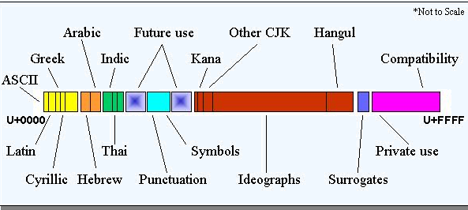
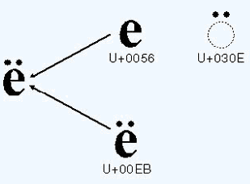
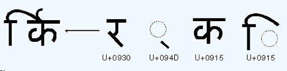

DAI, Codificación de Caracteres: Unicode
Desarrollo de Aplicaciones para Internet
Codificación de Caracteres: Unicode

Codificaciones para signos
En Europa Occidental usamos ahora (2016),
4 codificaciones distintas para los signos del alfabeto latino:
- ASCII
- ISO-8859-1, ISO-8859-15, "Latin1"
(ANSI en Windows)
- UTF-8
- UTF-16
(UNICODE en Windows)
ASCII
A merican S tandard
C ode for I nformation
I nterchange
Es un código de 7 bits creado en 1963, solo para los
signos que se usan
en inglés
Nota sobre el fin de línea,
se pone como:
\n (unix)\r\n (windows)\r (mac)
Códigos ISO-8859
Son 16 códigos distintos
de 8 bits, ampliaciones del ASCII,
que permiten usar signos alfabéticos usados en otras lenguas distintas del inglés
Latin - 1
En Europa Occidental usamos el conjunto de carácterers
Latin-1 en alguna
de sus variantes
UNICODE
Es una codificación universal con un repertorio de más de 120000 signos
de cualquier alfabeto, cada uno tiene asignado un code point

Direccionalidad y composición
Los interpretes de Unicode manejan automáticamente
la dirección de la escritura y la composición de signos

Formatos de Unicode
Unicode se puede codificar de 3 maneras:
- UTF-8 (en unix, internet, ...)
- UTF-16 (en windows)
- UTF-32
UTF-8
Es una codificación variable de 8 bits compatible con ASCII.
- 1 byte: US-ASCII (128 caracteres)
- 2 bytes: caracteres romances más signos diacríticos, alfabetos griego, cirílico, copto, armenio, hebreo, árabe... (1920 caracteres)
- 3 bytes: Caracteres del plano básico multilingüe de Unicode: caracteres de uso común, incluyendo chino, japonés y coreano.
- 4 bytes: Caracteres del plano suplementario multilingüe. Símbolos matemáticos y alfabetos clásicos para uso académico.
Uso
UTF-8 es el más generalizado, sobretodo en Internet y en UNIX
| 葉 → 葉 |
| ♞ → ♞ |
| é → é |
| é → é |
| © → © |
UTF-16 se usa en Windows
En html o xml se puede escribir cualquier signo: &#decimal;
o algunos signos se pueden escribir con character encodings
Codificación en protocolos de Internet
En internet se presupone UTF-8 a menos que se indique otra cosa
# En HTML5, después de la declaración
<meta charset="UTF-8">
# En HTML4, y HTML5 en el <head>
<meta http-equiv="Content-Type" content="text/html; charset=ISO-8859-1">
# En XML, utf-8 por defecto, si no:
<?xml version="1.0" encoding="ISO-8859-1">
Conversión entre formatos
Se puede cambiar con cualquier editor de texto, o con las utilidades de unix:
iconv
recode
Soporte en C++
En Unicode no todos los carácteres tienen 1 byte
Para estos está el tipo wchar_t
en lugar de char y las funciones wcs
Unicode en python
Desde Python 3 el tipo str contiene caracteres Unicode
En Python 2 existe el tipo unicode distinto del str
Codificación - Descodificación en Python3
En python3 existen los tipos str (unicode) y binary
Para convertir pasar desde / hasta las distintas
codificaciones están las funciones byte.decode()
y str.encode()
a = 'cañón'
print (a.encode('utf8'))
b'ca\xc3\xb1\xc3\xb3n'
Entrada / Salida en Python3
Se trabaja en unicode internamente, y solaménte se
debe convertir a o desde una codificación concreta en
la entrada / salida
write y open, codifican y
descodifican automáticamente (utf-8 por defecto)
a = 'cañón'
f = open ('texto.txt', 'w', encoding='utf-8')
f.write(a)
f.close()
with open('texto.txt', encoding='utf-8') as f:
print (f.readline())
Unicode en Python 2.7
En python 2.x hay un tipo unicode, distinto del
str.
El unicode equivale al tipo
str del python3, y el str al binary
| Python 3 |
Python 2.7 |
| str |
unicode |
| binary |
str |
Además hay que poner en el código fuente:
# -*- coding: utf-8 -*-
Unicode en Python 2.7
Existe el tipo unicode
# Constructor
a = unicode('cañón', encoding='utf8')
# Como literal
a = u'cañón'
a = u'ca\xf1\xf3n'
# se pueden usar los métodos de str con el tipo unicode
a.replace('a', 'aaa')
Se pasa de str a unicode y viceversa con las funciones
str.decode()
y unicode.encode()
Entrada / Salida en Python 2.7
Se trabaja en unicode internamente, y solaménte se
debe convertir a o desde una codificación concreta en
la entrada / salida
import codecs
f = codecs.open('unicode.rst', encoding='utf-8')
for line in f:
print line
f = codecs.open('test', encoding='utf-8', mode='w')
f.write(u'cañón')
f.close()